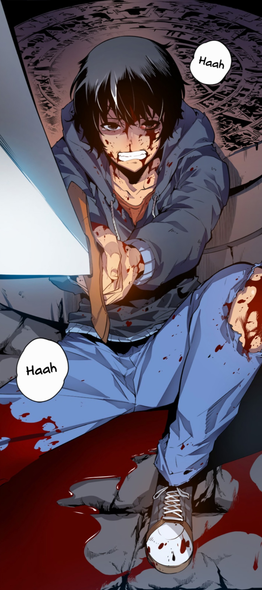
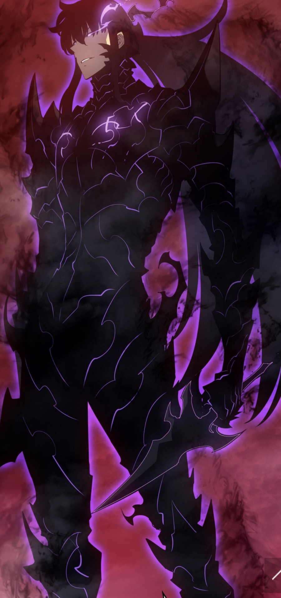

Fino all’età di dieci anni ho abitato nel quartiere Kennedy di Nichelino per poi trasferirmi nell’attuale abitazione in zona Rusca. Caratterialmente, ne sono conscio, non sono particolarmente estroverso; con difficoltà entro in sintonia con le persone ma se capita sono un ragazzo molto estroverso e, mi ritengo, simpatico. Fino ad ora pochi avvenimenti hanno caratterizzato la mia vita e tra questi, forse il più significativo, è stato ri-incontrare il mio compagno della scuola dell’Infanzia Giovanni, con cui dal primo giorno di scuola superiore, ho stretto una forte amicizia anche per via della comune passione su anime e manga.
i miei interessi principali sono gli anime, i manga e ascoltare la musica. Queste tre passioni affondano le proprie radici nella mia infanzia caratterizzata dalla presenza di questi tre aspetti. Fin da bambino infatti sono stato abituato a vedere in televisione anime che, successivamente, mi hanno portato anche a leggere i manga. La musica è, posso dire, la costante della mia vita: prima come accompagnamento ai momenti di svago o noia e, successivamente, un elemento che è costantemente con me e che mi accompagna come sottofondo durante tutta la giornata.
Con passioni come quelle descritte prima l’Astrattismo è sicuramente una competenza acquisita e sfruttata nel quotidiano. Per astrattismo voglio intendere la capacità di collegare diversi argomenti, chiudere gli occhi e utilizzare la mente per viaggi, ma soprattutto riuscire a collegare diversi argomenti di diverse materie scolastiche.
Gli obiettivi principali a breve termine riguardano il superamento di ogni anno scolastico con una media adeguata e senza perdere anni. Questi rientrano in un obiettivo a lungo termine di maggiore portata come diventare un fisico astronomico. Essendo l’obiettivo a lungo termine strettamente collegato al percorso scolastico questo implica anche una serie di sottintesi obiettivi a breve e medio termine.
la mia storia manga preferita è solo leveling dove il protagonista viene definito “l’arma più debole dell'umanità”, un giorno, durante una spedizione in un dungeon, lui si sacrifica per salvare i sopravvissuti del suo gruppo. è lì che si apre una finestra trasparente, il sistema. quest'ultimo, gli offre la possibilità di diventare l’arma più forte dell’umanità. ciò è collegato a me perché come precedentemente citato non sono uno molto estroverso e di fatto non ho mai avuto veri amici, ma dopo aver conosciuto Giovanni ho avuto un senso di rinascita.
 